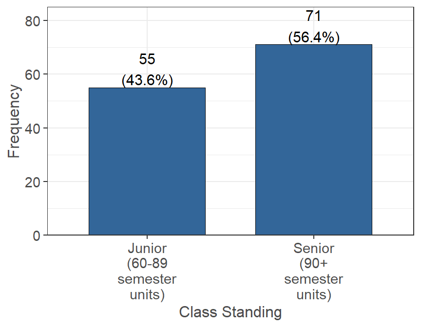
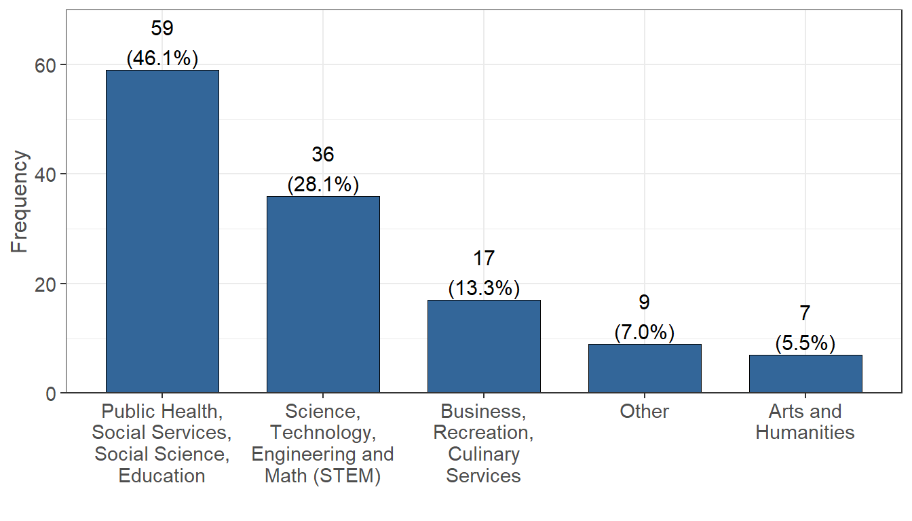
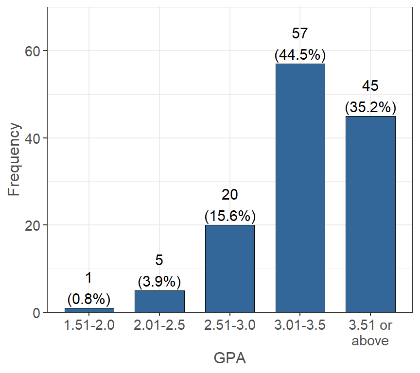
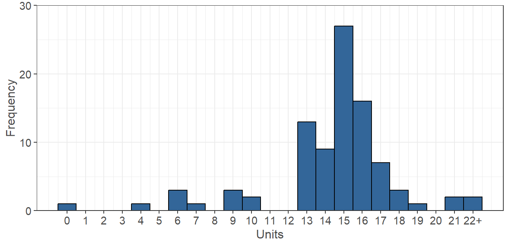

The following set of questions were asked in regard to the students’ academic demographics. This includes information such as their class standing, major, GPA, and number of enrolled units. They were also asked questions about programs they participate in as well as what type of student they are (transfer, international, etc.) to help identify students.
Estimate your class standing by units completed (n=126, 94% of 134 reporting).

Figure 2.1: Current Academic Level
The survey was distributed to all junior and senior undergraduate students who met the EOP eligibility requirement. Out of the 126 respondents, 71 (56.3%) reported being seniors
What is your major? (n=128, 96% of 134 reporting).  Figure 2.2: Declaration of Major
NOTE: Science, Technology, Engineering and Math (STEM) was shortened for the figure above, but also includes the following majors: Medicine, Computer Science, Agriculture, Accounting, Statistics, Nursing, and Nutrition.
The majority of students in the data are majoring in a Public Health, Social Services, Social Science, Education program (59 people). There were 36 students who were Science, Technology, Engineering and Math (STEM) majors. Students were also given the option of “Other” to fill in a major if it did not fall into one of the above categories. There were 7 out of 9 respondents who specified their “Other” major, with results shown in Table 2.1 below.
| Other Majors | Occurrence (%) |
|---|---|
| Criminology | 4/7 (57.1%) |
| Special Major | 1/7 (14.3%) |
| CFS | 1/7 (14.3%) |
| Architectural Studies | 1/7 (14.3%) |
What is your approximate overall grade point average (GPA)? (n=128, 96% of 134 reporting).

Figure 2.3: Approximate Overall GPA
The highest frequency overall GPA for the data ranges between 3.01-3.5 (57 students), followed by 3.51 or above (45 students). There are also 20 students who have an overall GPA between 2.51-3.0.
How many units are you currently taking? (n=127, 95% of 134 reporting).  Figure 2.4: Currently Enrolled Academic Units
Note that “22+” was rounded to 22 in the following analysis for the currently enrolled number of units.
The average number of units that a survey participant in this data is enrolled in is 13.75 units, while the median is 14 units. The data indicates 117 students are considered full-time (12 or more units), with 12 units being the highest occurring and 15 units being the second highest occurring.
The following tables contain separate questions that were asked as a series of Yes/No responses to help further understand students.
| Yes (%) | |
|---|---|
| An EOP (Educational Opportunity Program) student (n = 129). | 129 (100.0%) |
| A Transfer Student (n = 129). | 57 (44.2%) |
| An ESL (English as a Second Language) student (n = 122). | 55 (45.1%) |
| An Upward Bound, Educational Talent Search, AVID, TRIO, or other college preparation program alumni student (n = 122). | 29 (23.8%) |
| LGBTQA+ (n = 123). | 15 (12.2%) |
| A student with a disability (n = 126). | 9 (7.1%) |
| A DREAM (i.e. undocumented) student (n = 126). | 7 (5.6%) |
| A DACA (i.e. Deferred Action for Childhood Arrivals) student (n = 127). | 7 (5.5%) |
| A former foster youth/child (n = 127). | 3 (2.4%) |
| A non-California resident (not International) (n = 126). | 2 (1.6%) |
| A Veteran of military service (n = 127). | 1 (0.8%) |
| An International student (n = 126). | 0 (0.0%) |
| A student athlete (n = 126). | 0 (0.0%) |
Note: This name varies by campus and may not always be called the Disability Support Service Center. The \(n\) reported is the number of respondents who answered each question. Disagreement indicates that not all students answered both questions.
| Yes (%) | |
|---|---|
| I have NOT received services through the Disability Support Services Center (n = 119). | 63 (52.9%) |
| I receive services through the Disability Support Services Center (n = 126). | 7 (5.6%) |
| Yes (%) | |
|---|---|
| CalWorks (i.e. TANF or cash aid for needy families) or Aid to Families with Dependent Children (AFDC) (n = 120). | 16 (13.3%) |
| The CalFresh Employment or Training (CFET) Program (n = 127). | 9 (7.1%) |
| The Greek system (i.e. sorority, fraternity) (n = 127). | 6 (4.7%) |
| The Job Opportunities and Basic Skills (JOBS) program (n = 126). | 5 (4.0%) |
| Yes (%) | |
|---|---|
| Currently a Pell Grant recipient (n = 118). | 105 (89.0%) |
| Approved, awarded, or accepted for work study (with or without a work study job) (n = 103). | 25 (24.3%) |
| The parent/guardian of a dependent household member between the age of 6 and 12 with no adequate childcare (n = 129). | 8 (6.2%) |
| A single parent of a dependent household member under the age of 12 (n = 129). | 6 (4.7%) |
| Enrolled in the Mathematics, Engineering, Science achievement (MESA) program (n = 128). | 3 (2.3%) |
| Enrolled in a program that increases employability for current and former foster youth (PATH Scholars, Educational Opportunity Resilient Scholars Program (RSP), Renaissance Scholars Program) (n = 125). | 3 (2.4%) |
| Enrolled in Workforce Innovation and Opportunity Act (WIOA) (n = 128). | 1 (0.8%) |
| Enrolled in a Teaching Credential Program (n = 0). | 0 (NA) |
| Enrolled in the School of Social Work Practicum Program (Field work program) (n = 0). | 0 (NA) |
Click here to go to the Personal Demographics page.